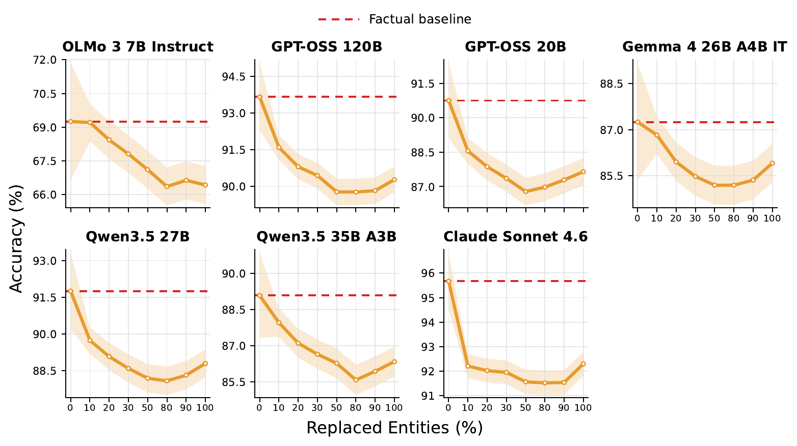
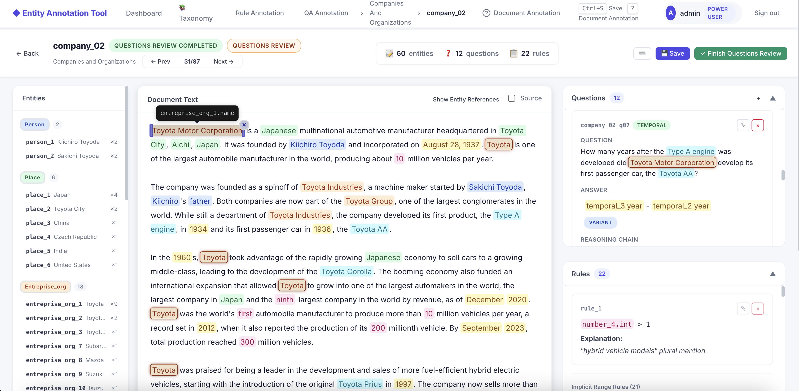

MemoReason changes entity identities and values while preserving the evidence chain, question,
reasoning operation, and difficulty.
FactualKnown entities
The Apollo program was conceived in
1960. Its first crewed flight was in
1968.
Temporal reasoning
How many years passed between conception and the first crewed flight?
Answer 8 years
same structure→
entities replaced under constraints
FictitiousNovel entities
Project Heliond was conceived in
1950. Its first crewed flight was in
1981.
Temporal reasoning
How many years passed between conception and the first crewed flight?
Answer 31 years
A paired example from the Apollo template. Color-matched spans share the same semantic role;
replacement rules keep the new document internally consistent.
The question behind the benchmark
Do models reason from the document—or from what they already know?
For answerable tasks, familiar entities can make a reasoning problem easier even when the required
evidence appears in the prompt. MemoReason separates this broad familiarity effect from a stricter
failure mode: directly reproducing a memorized factual answer instead of solving the paired task.
01
Memory bias
Familiar content improves contextual reasoning.
If this is true, accuracy should fall when known entities are replaced by plausible fictitious ones,
while the reasoning structure remains fixed.
✓ Significant for 9/9 models on variant-answer reasoning
02
Strong parametric shortcut
Models skip the reasoning and recall the factual answer.
A targeted error analysis checks whether failures on fictitious variant-answer questions reproduce
the answer to their factual counterpart.
↘ Rare—not the dominant failure mode
Benchmark construction
Controlled by design. Curated by humans.
Each source document becomes a reusable template. Annotators identify replaceable spans, encode
dependency rules, and write questions before ten consistent fictitious worlds are sampled.
01Source
Select a self-contained factual document.
02Annotate
Type entities and encode cross-entity rules.
03Replace
Generate plausible, internally consistent worlds.
04Compare
Evaluate paired answers with the same QA contract.
Four question classes crossed with three answer classes
Question class
Variant
Invariant
Refusal
Extractive
Included
Included
Included
Arithmetic
Included
Included
Included
Temporal
Included
Included
Included
Inference
Included
Included
Included
What the evaluation reveals
Familiarity helps. Simple recall does not explain why.
Across nine recent LLMs, paired document-level inference shows a robust reasoning penalty after
factual entities are replaced. Yet the corresponding memorized factual answer is seldom emitted.
9 / 9
models drop significantly on variant-answer reasoning
The aggregate reasoning penalty ranges from 6.5 to 8.1 percentage points.
15.7 pp
largest significant effect
Inference questions are the most affected reasoning class.
1.0–3.2%
reasoning shortcut rate
Among failed fictitious variant-answer reasoning items, factual-answer reproduction is rare.
8 / 9
show significant flip asymmetry
Across all questions, errors are more likely when a previously correct factual item becomes fictitious.
Partial replacement experiment
Mixed contexts are often hardest.
All seven curves fall below the factual baseline by 50% replacement, and six recover after minima
between 50% and 80%. The pattern is common but not universal in magnitude; overlapping confidence
intervals do not establish a causal mechanism on their own.

Accuracy as the share of replaced entities increases. Bands show 95% document-cluster bootstrap
intervals; dashed lines mark each model's factual baseline.
Model report card
One score is not enough.
High fictitious accuracy measures contextual reasoning ability. A small gap measures robustness only
when read alongside that accuracy. Sort the columns to inspect both.
MemoReason model report card. Rank is based on fictitious accuracy; metric columns are sortable.
Rank
1
Claude Sonnet 4.6
92.30%
3.37 pp
1.78×
2.01%
2
GPT-OSS 120B
90.28%
3.38 pp
1.53×
1.33%
3
Qwen3.5 27B
88.80%
2.95 pp
1.36×
1.18%
4
GPT-OSS 20B
87.65%
3.10 pp
1.34×
2.18%
5
Qwen3.5 35B-A3B
86.34%
2.74 pp
1.25×
2.33%
6
Gemma-4 26B-A4B-it
85.91%
1.34 pp
1.11×
1.10%
7
Llama-3.1 8B-Instruct
76.88%
1.37 pp
1.06×
3.19%
8
OLMo-3 7B-Think
75.61%
5.31 pp
1.28×
0.98%
9
OLMo-3 7B-Instruct
66.42%
2.83 pp
1.09×
2.53%
Fictitious accuracy is overall accuracy after full entity replacement.
Gap is factual accuracy minus fictitious accuracy, in percentage points.
Error ratio is fictitious error divided by factual error.
Reasoning shortcut rate is direct factual-answer reproduction among failed fictitious variant-answer reasoning items.

Human-in-the-loop curation
Automation proposes. Annotators decide.
The interface keeps document spans, replacement rules, and question contracts visible together.
Language models assist candidate generation, but humans validate every released template and answer.
38.0
entities per document on average
31.2
replacement rules per document
≈50%
of proposed QAs needed human intervention
200 / 200
observed human agreement with Judge Match
Stress tests & controls
The effect survives the obvious alternatives.
MemoReason reports paired uncertainty at the source-document level and tests whether decoding,
frequency, judging, or extra reasoning effort can account for the observed gap.
01
Document-cluster bootstrap
Variants stay grouped by source document, preserving the benchmark's dependency structure.
02
Calibrated answer judge
Judge Match agrees on all 200 human-audited items; the 95% lower confidence bound is 98.2%.
03
Temperature robustness
Across two models and three temperatures, gap changes remain between 0.03 and 0.29 points.
04
Frequency is not enough
Entity frequency correlates weakly with the drop: Pearson r = −0.103, with a CI crossing zero.
05
More effort is not a cure
GPT-OSS-20B's gap remains significant at low, medium, and high reasoning effort.
06
Reasoning helps, the gap remains
OLMo-3-Think raises absolute accuracy over Instruct, while the reasoning gap persists.
Paper
A controlled lens on memory and reasoning.
Abstract
MemoReason pairs factual reasoning tasks with structurally identical fictitious versions, replacing
real entities with type-matched novel ones while keeping task complexity fixed. Evaluations of nine
recent LLMs reveal a consistent memory bias: models reason better in familiar worlds. Targeted error
analysis shows that direct factual-answer recall is uncommon, pointing to a subtler interaction
between memorized knowledge and contextual reasoning.
Citation
Cite MemoReason.
A compact BibTeX entry for referencing the benchmark and its paired design.
Citation
BibTeX
@misc{tighidet2026memoreason,
title = {MemoReason: Evaluating the Effect of
Parametric Memory on Contextual Reasoning in LLMs},
author = {Tighidet, Zineddine and Mogini, Andrea and
Mei, Jiali and Gallinari, Patrick and
Piwowarski, Benjamin},
year = {2026}
}